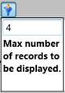

Subset filter is used to filter the number of records in the result set. Subset filter will get a numeric number as input and restrict the number of records within that count.

Figure 62: Subset Filter
We can specify the subset filter for both row and column.
Users can toggle the visibility of SubSetFilters by using this property. This property will accept a Boolean value (true/false) based on this value it sets the visibility of SubSetFilters.
|
[C#]
this .olapClient1.ShowSubsetFilters = false;
|
|
[VB]
Me .olapClient1. ShowSubsetFilters = False
|